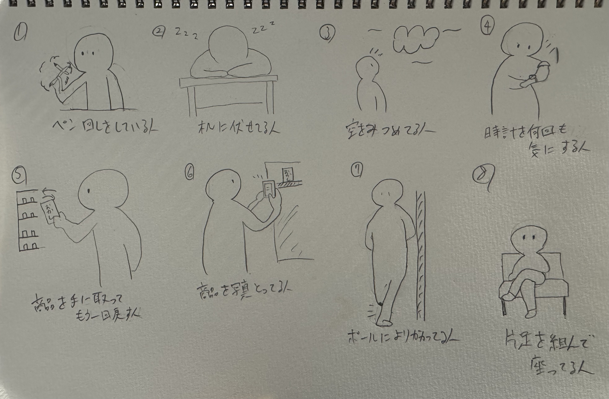

授業中などに手元でペンを何度も回している人。無意識に手を動かしているように見える。
休み時間などに机に顔を伏せている人。疲れていたり少し休憩したりしているように見える。
立ち止まって空を見上げている人。景色を眺めたり、考え事をしたりしているのかもしれない。
腕時計を何度も確認している人。時間を気にしていて次の予定を意識しているように見える。
商品を手に取って値段や内容を確認している人。どの商品を買うか迷っている様子が見られる。
買い物中にスマートフォンで商品を撮影している人。後から見返したり、誰かに共有したりするのかもしれない。
立っているときに片方の足に体重をかけている人。自然と楽な姿勢を取っているように感じる。
椅子に座っているときに片足を組んでいる人。リラックスしている感じがする。